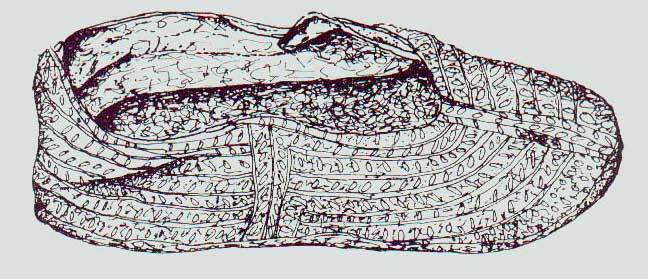
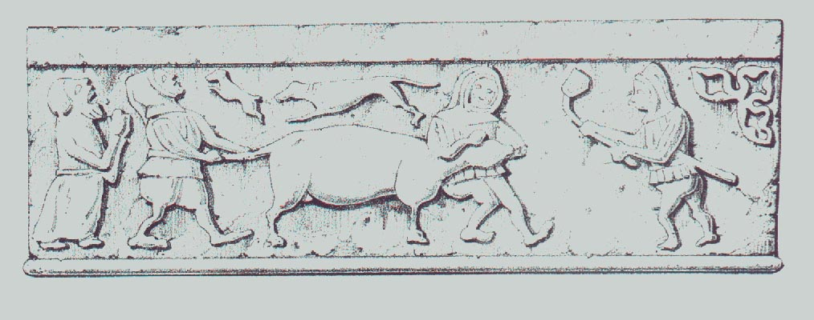
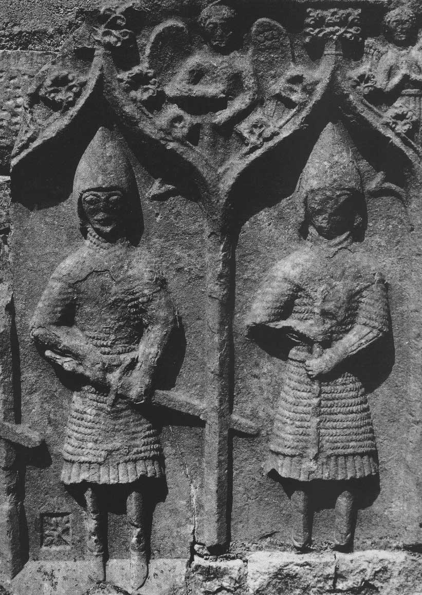
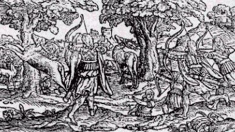
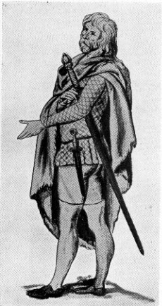

Scottish Highlands, 1100-1600 CE
- Home
- Hallstat and La Téne Celts
- Ireland, 5th - 10th c. AD
-- Hair, Jewelry, etc. (Classical Celts and pre-medieval Ireland) - Late Medieval Ireland
- Medieval Scotland, 1100-1600
- Scotland, 1600-1800
-- Assembling a Basic 18th c. Woman's Outfit - Dyes
- Fiber Working Techniques
- Celtic Costume Myths and Tips
- Patterns and Resources
- Bibliography
- Recommended Reading
- Other links
The Scottish Highlands were considered a backwater of Europe, and not worth much attention, and consequently there are few descriptions or drawings of what people wore. In addition, few clothing remains have been found. All of this makes reconstructing a workable outfit rather difficult. Even in the later periods, documentation, especially for womens' clothing, is sketchy. At the same time, the Highlands were not absolutely isolated from the clothing trends that affected the rest of Europe, so one does see changes over time -- for example, ca. 1100 sleeves throughout Europe were narrow, and that's what we see in the Rogart Shirt. In the 1500s, wider sleeves were more popular throughout Europe, and one sees a wider sleeve in Irish clothing, too (albeit in a particularly Celtic form).
However, from what little documentation we do have, it seems that the Highland Scots kept fairly close to their Gaelic roots (the Gaels in Scotland originally came from northern Ireland and are not synonymous with the Picts), wearing the two basic components of Gaelic clothing common in Ireland in this same era: the l�ine and the brat. Additional items of clothing included the inar (also spelled various ways, including ionar), a short jacket, and trews of various length, from full-length trews to something rather like modern shorts, with a length somewhere between the hip and knee. See Ireland, 5th-10th c. AD for a background on the history of Gaelic clothing.
Various claims have been made for the wearing of the kilt (either the breacan feile or belted plaid, or the feilebeg or short kilt) prior to 1600, but I have looked at detailed photographs of the disputed stone carvings and think that this conclusion is insupportable; the garments in question are clearly l�ines hanging in folds or other such garments. H.F. McClintock, widely considered to be the leading authority on the subject, thoroughly discusses and dismissses the possibility of the kilt being worn prior to the late 1500s in his book Old Highland Dress and Tartans (see bibliography).
The L�ine
The term l�ine, which in modern Gaelic simply means 'shirt', originally referred to the main garment worn by Gaels, both men and women alike. See Ireland, 5th-10th c. AD for further information about the history of this garment. Women wore their l�inte (plural of l�ine) full-length. Men's l�inte could be shorter, from mid-thigh to approximately knee-length or longer. McClintock states that the l�inte in Ulster and some areas of Scotland was commonly worn only to mid-thigh length -- possibly because they were tucked up into the belt, as can be seen in some of the pictures below. He also cites sources stating that trews were worn by the more well-to-do in winter, and that only the nobles dyed their l�inte a saffron color (which practice seems to have been discontinued by the year 1600). Poorer folk sometimes coated their leines in grease as a form of waterproofing.
For a closer look at the construction of a l�ine-type garment (in wool, though, not linen), see the Rogart Shirt. Also look at Marc Carlson's Some Clothing of the Middle Ages - Tunics - The Rogart Shirt. See my remarks above about the evolution of the l�ine over time -- the sleeve width, in particular, seems to have changed between the early and late Middle Ages, following general European fashion trends.
The Brat/Plaid
There isn't any credible documentation of a kilt any earlier than the late 1500s. It is a rather unique garment and certainly would have been remarked on by outside observers if it were common and widespread. So if you're doing a Highland impression of a period earlier than the late 1500s, please wear it as a cloak (as the earlier Irish would have worn it), not belted.
The term plaid (pronounced 'playd') in this context means a blanket or cloak, not the pattern of the material; it can refer to cloth that is white, a single color such as grey or brown, or striped as well as the usual checked cloth. It is basically a long, un-shaped length of cloth, pinned as a cloak at the breast. Garments such as this have a long history of use by rural people throughout Britain.
The brat or plaid is described as being 12 to 18 feet long by about 5 feet wide, being made of two strips of cloth about 30" wide sewn together lengthwise, with fringes. (McClintock, Old Highland Dress, p. 19) For modern purposes, this means that you only need to get 4 to 6 yards of 60" wide material -- I recommend not more than 4 yards unless you are very tall, as more than that tends to be too bulky/weighty to conveniently carry around at events. They do not need to be tartan; white, striped and single-color plaids were also common, especially grey and brown, which served as good camoflage in the heathery hills of Scotland. In earlier periods, sheep and goat skins seem also to have been worn as mantles, both with and without the hair still attached.
There is a description of Scottish soldiers from the Hebrides in Ireland (fighting for Red Hugh O'Donnell in 1594) that makes clear that they had sufficiently different appearance from the Irish soldiers that an observer could tell them apart. They are described as wearing their belts over their mantles, which sounds to me like a description of the belted plaid -- the first kilt:
"They [the Scottish soliders] were recognized among the Irish Soldiers by the distinction of their arms and clothing, their habits and language, for their exterior dress was mottled cloaks of many colours (breacbhrait ioldathacha) with a fringe to their shins and calves, their belts over their loins outside their cloaks. Many of them had swords with hafts of horn, large and warlike, over their shoulders. It was necessary for the soldier to grip the very haft of his sword with both hands when he would strike a blow with it. Others of them had bows of carved wood strong for use, with well-seasoned strings of hemp, and arrows sharp-pointed whizzing in flight." (Quoted in McClintock, Old Highland Dress, p. 18: The Life of Aodh Ruadh O Domhnaill transcribed from the book of Lughaid O'Cleirigh. Irish Texts Society's publications, vol. XLII. Part I. Page 73.)
There isn't any credible documentation of a kilt any earlier than this, however. So, I repeat, if you're doing a Highland impression of a period earlier than the late 1500s, please wear it as a cloak, not belted.
The plaid (unbelted) was also sometimes worn with trews, and can be seen in portraits worn wrapped over one shoulder and under the opposite arm.
Note: The bottom part of the belted plaid should NOT cover the knees; when properly worn, it should hang just long enough to graze the back of the calf when the wearer is kneeling.
Clan tartans are a relatively recent innovation, due to renewed interest in Scottish heritage in the early 1800s, when the laws against the wearing of kilts and tartans were lifted. People most likely wore a pattern of tartan common to the district they lived in (weavers had their favorite patterns in different areas), and could therefore be identified as being from that area if they travelled outside their district. Some very complex tartans are shown in the portraits of Scottish lords that date from the 1600s. Often the portraits show that the clothing was not all made up of the same tartan -- various pieces of clothing were woven with different 'setts' (tartan patterns), with an effect that looks to the modern eye rather like a bad golfing outfit.
Here are instructions on wrapping the belted plaid:
Women's Plaids deserve special mention, since they could be a little different from men's plaids. They were about the same size, but sometimes were plain white or striped rather than tartan. (To get the striped fabric, they most likely used the same warp as was used to make the tartans, but used one color for the weft.) Women wore the plaid like a shawl, with large silver brooches fastening them at the breast. At some point, women also started belting their plaids around themselves, very much as men did, pinning both upper ends of the plaid on their breast. Women's plaids, whether belted or unbelted, however, were called airisaidhs, as distinct from the breacan feile (the Gaelic name for the kilt).
Women's plaids are described as "much finer, the colours more lively, and the squares larger than the men's" (Governer Sacheverell, in McClintock's Old Highland Dress, p. 25)
(I have discovered that the belted plaid arrangement, when both ends are pinned on the breast, makes a rather large pouch/pocket around the waist, which is rather handy for carrying one's lunch, extra wool, a drop spindle, etc... but if you stick too much stuff in there, it does look funny.)
Jewelry
Many people putting together a kit for a Medieval Scottish persona make the mistake of using torcs and penannular brooches with their outfits. These fell out of use around 1100, so their use with later costumes is incorrect. Here's an overview of the type of brooches used in Scotland during the Middle Ages. A couple of sites that offer good annular brooches for sale: Bill Dawson - Metalsmith and Gaukler Medieval Wares.
Jacket/Other Outerwear
Some of the descriptions list an outer garment -- a short woolen jacket reaching to the waistline, with sleeves that open below to let the long sleeves of the leine flow out. This corresponds to the inar worn by the Irish at this time.
Another outer garment seems to be like the Irish 'cotun', a padded/quilted jacket with a deerskin covering worn into battle.
The Highland bonnet is a descendant of the flat caps worn by all classes throughout Europe during the late Renaissance (1500s - early/mid 1600s). It does not seem to have been worn in the Highlands earlier than 1600 CE; the Highlanders are invariably described as bare-headed with long hair. However, the bonnet seems to have gradually made its way into the Highlands by the mid-to-late 1700s. They are usually described as blue, though other colors are certainly known.
Shoes:
Below: 7th or 8th century leather shoe from Perthshire, Scotland

Timeline of Scottish Clothing:
This timeline is derived from H. F. McClintock's Old Highland Dress and Tartans; he summarizes the various descriptions of Highland clothing in outline form. The words in parentheses are the words the author uses to describe the clothing, not the words the Scots themselves would have used. I have added my own notes in brackets, and have also added numbers 11 & ff. from other quotations.
1) Magnus Berfaet's Saga - 1093 AD:
- Tunic (Kyrtil). [described in the saga as being short]
- Overgarment (probably a mantle).
- Barelegged.
Below: Stonework from Iona Cathedral

Below: 15th c. Scottish Gallowglasses (mercenary soldiers), as shown on a tomb in Co. Roscommon, Ireland:

2) Major - 1521.
- Saffron shirt.
- Mantle or plaid ('chlamys').
- "Panneus lineus" worn in battle and daubed with pitch. Probably a quilted and padded linen coat serving the purpose of armour.
- Barelegged from middle of thigh.
3) The King's Highland Suit - 1538.
- Short Highland jacket of velvet.
- Tartan trews.
- Long Highland shirt. [this was the one made of only 7-1/2 ells]
4) Jean de Beaugue - 1548 - 9.
- Dyed shirt.
- Mantle or plaid ('couverture') of several colours.
- Otherwise unclothed.
5) Putscottie - 1573.
- 'Mantle' (sic).
- Saffron shirt.
- Barelegged to the knee.
Below: Scene of Scottish Highlanders hunting, from Holinshed's Chronicle, 1577. As you can see, the clothing worn is very similar to that worn in Ireland in the same period.

6) Bishop Lesley - 1578.
- Plaid or mantle ('chlamys'). Nobles' vari-coloured, Peasants' plain.
- Also shaggy rugs ('villosae stragulae') like those of the Irish.
- Short woolen jacket ('tunicella') with sleeves open below.
- Very large pleated shirts made of linen, flowing loosely to the knees and with wide trailing sleeves, dyed with saffron among the rich, smeared with grease among the poor. [Lesley also says, 'In the manufacture of these, ornament and a certain attention to taste were not altogether neglected, and they joined the different parts of their shirts together very neatly with silk thread, chiefly of a red or green colour.']
7) Buchanan - 1581.
'Variegated' and 'striped' garments. Plaids ('sagum') sometimes many coloured, but more generally of a dark colour matching the heather.
8) D'Arfeville - probably 1547 - not published until 1581. [The Western Isles]
- Large, wide saffron shirt.
- Coarse woolen coat to the knees, like a cassock, over the shirt.
- Bareheaded with very long hair.
- Barelegged and generally barefooted, occasionally high boots reaching to the knee.
DeHeere's drawing of a Scottish Highlander (1577):

Reconstructing History's web site has a discussion of whether this drawing has been altered, possibly by an anonymous Victorian, by adding the lines across the mid-thigh, making it appear that the Highlander is wearing brief trews. The picture of a stonecarving from Iona above shows similar jackets with no indication as to whether the men are wearing trews or are going bare-legged. Both short and long trews were worn considerably earlier in Ireland (see the Book of Kells; also, some soldiers on the 10th c. Cross of Muiredach seem to be wearing short trews). However, given the length of time separating these early examples of trews and the drawing above, that line of thought would be inconclusive. Another data point is the existence of a somewhat contemporary book cover from Co. Dublin, Ireland, showing similar figures who are clearly wearing some kind of close hose:

Note: Please be wary of the 'Modern Depiction of Ancient Gael' illustration at the top of the Reconstructing History Kilts page; I don't find any evidence of fur leg-wraps being worn.
9) History of the Gordons - 1591 (date of event).
"Yellow war coat, which amongst them is the badge of the Chieftaines."
10) Gordon of Straloch. 1594 (Date of period described).
- Tartan plaid. ('Loose Cloke of several ells, striped and parti-color'd').
- Short linen shirt, which 'the great' sometimes dyed with saffron.
- Short jacket.
- Trews (in winter).
- Short hose (stockings) at other seasons.
- Raw leather shoes.
11) Lughaid O'Cleirigh. 1594.
Tartan plaid, fringed, with a belt over it. ('mottled cloaks of many colours')